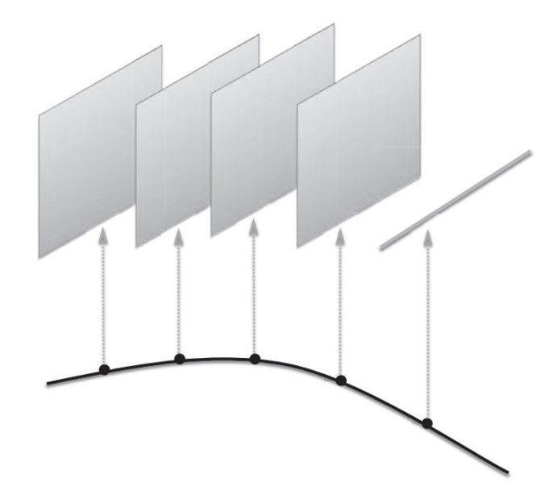
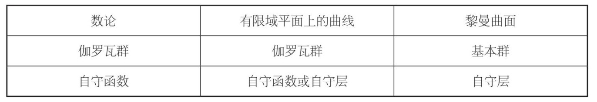

第二年春天，哈佛迎来了更多的访问学者，弗拉基米尔·德林费尔德就是其中一位。他的到来改变了我的研究方向，并且在很多方面都对我的数学研究生涯产生了深远的影响。这些变化的原因都与朗兰兹纲领有关。
此前，我听说过德林费尔德。尽管他当时才36岁，但已经是数学界的一个传奇人物。在我们结识6个月之后，他获得了菲尔兹奖。这是数学界最崇高的荣誉之一，有很多人认为，菲尔兹奖的分量并不亚于诺贝尔奖。
德林费尔德17岁时就发表了他的第一篇数学论文，20岁时已经开辟出关于朗兰兹纲领的新的研究领域。他来自乌克兰的卡尔可夫，父亲是一位著名的数学教授。20世纪70年代初，德林费尔德就读于莫斯科大学。（当时，莫斯科大学招生时虽然也会排挤犹太人，但仍会招收一定比例的犹太裔学生。）大学还没毕业，他就因为在研究中取得的成绩而闻名世界，并被研究生院录取。这对一名犹太裔学生而言的确非同凡响，他的导师尤里·曼宁（Yuri Ivanovich Manin）也是全世界最有独创性和影响力的数学家之一。
不过，即便是德林费尔德，也没能完全摆脱反犹太主义的侵扰。在获得博士学位之后，他不能在莫斯科就业，而只能到乌法市的一所地方性大学任教三年。乌法是位于乌拉尔山脉中的一座工业城市，德林费尔德并不愿意去那里，主要原因是那里没有人在德林费尔德关心的数学领域从事研究工作。不过，他在乌法待了三年之后，却完成了一篇重要的论文，介绍了可积分系统的理论。可积分系统现在被称作德林费尔德–索科洛夫系统，是德林费尔德与乌法当地的弗拉基米尔·索科洛夫（Vladimir Sokolov）合作完成的研究成果，然而这与他本人感兴趣的领域相去甚远。三年之后，德林费尔德终于在他的家乡谋得了一份工作，去卡尔可夫低温物理研究所就职。这份工作比较清闲，而且他得以与家人团圆。不过，在卡尔可夫上班，却无法与苏联数学界保持密切联系。苏联数学家的第一聚居地是莫斯科，其次是圣彼得堡。
尽管德林费尔德孤军奋战，却在数学和物理等多个领域不断取得优异的成绩。他所做的贡献涉及范围之广令人咋舌。他不仅证明了朗兰兹纲领中的某些重要猜想，与索科洛夫合作掀开了可积分系统理论的新篇章，提出了量子群的一般理论（量子群最初是柯里亚·莱希廷辛与他人合作提出的一个概念），还有其他众多成果。
后来，有人尝试聘请德林费尔德到莫斯科工作。据我所知，物理学家亚历山大·贝拉温（Alexander Belavin）希望邀请德林费尔德到位于莫斯科附近的朗道理论物理研究所工作。为了增加成功的砝码，贝拉温决定和德林费尔德一起合作，最终完成了对“杨–巴克斯特经典方程”解的分类这个重要问题的研究。这个问题是当时物理学界的一个热点问题。他们的论文发表在盖尔范德主办的《泛函分析及应用》杂志上（据我所知，这是这份杂志刊登的最长的一篇论文，其重要性可见一斑），并且赢得了诸多赞赏。正是因为完成了这项研究，德林费尔德从此开始涉足推动众多数学分支发生重大变革的量子群理论的研究领域。不过，所有人的努力都无济于事。面对反犹太主义的阻挠，再加上德林费尔德没有居留莫斯科的国内签证，事情不可能出现任何转机。德林费尔德只能继续待在卡尔可夫，偶尔才有机会去莫斯科。
* * *
1990年春，德林费尔德应邀访问哈佛大学，他在那年的1月底抵达美国。这对于我而言是一个意外的惊喜。我听说过他的传奇故事，因此一开始见到他时显得有些拘谨，但是经过一番交流之后，我发现他十分友善大方。德林费尔德说话时语气温和，言辞谨慎，在谈到数学问题时，他乐于分享自己的观点。他在解释一个问题时，从来不会故作神秘，让人以为这个问题无比深奥，似乎没有他的帮助就无法解决（我的有些同事的确是这样，这里就不提他们的名字了）。恰恰相反，他总是用平实的语言深入浅出地讲解问题，使人不知不觉就明白了其中的道理。
交谈了一会儿之后，德林费尔德告诉我，他对我和费金合作完成的那项研究很感兴趣，并且希望把我们的研究成果应用到他正在研究的一个与朗兰兹纲领有关的项目中。听到这番话，我更加放松了。
在第9章，我们谈到了安德烈·韦伊“罗塞塔石碑”的三个轨道：
数论 有限域平面上的曲线 黎曼曲面
最初，朗兰兹纲领的研究内容只涉及“罗塞塔石碑”左侧和中间这两个轨道，即数论与有限域平面上的曲线。朗兰兹纲领的理念是在伽罗瓦群与自守函数的表示之间建立联系。在“罗塞塔石碑”的左侧与中间两个轨道上，伽罗瓦群的概念是完全成立的，在数学的另一个领域，即调和分析中，我们也可以找到与之相匹配的自守函数。
在德林费尔德的研究之前，对于右侧轨道，即黎曼曲面理论，人们并不清楚朗兰兹纲领的类比对象在其中是否存在。20世纪80年代初，德林费尔德在研究中首先提出了把黎曼曲面纳入朗兰兹纲领的观点，法国数学界的热拉尔·洛蒙（Gérard Laumon）也紧随其后。他们认识到，有可能以几何的方式重新建构朗兰兹纲领，使其对安德烈·韦伊的“罗塞塔石碑”的中间和右侧两个轨道也有意义。
在“罗塞塔石碑”左侧和中间的两个轨道上，朗兰兹纲领使伽罗瓦群与自守函数发生了联系。现在的问题是，如何在黎曼曲面理论中找到合适的类比对象。我们在第9章曾讨论过，伽罗瓦群是以黎曼曲面的基本群表示的，但对自守函数的几何类比却并未加以研究。
研究发现，合适的几何类比对象不是函数，而是被数学界称作“层”（sheaf）的概念。
为了理解这个概念，我们先从数字开始讨论。我们有自然数1，2，3，…，而且我们知道，自然数有很多应用，其中的一个应用就是表示维数。我们在第10章讨论过，直线是一维的，平面是二维的，对于任意自然数n，我们有n维平坦空间，亦称向量空间。我们现在设想，在某个世界中，自然数被向量空间所替代，也就是说，我们没有数字1，而是有一条直线，没有数字2，而是有一个平面，依此类推。
在这个新世界中，数字的加法被数学家称为“向量直和”（direct sum of vector spaces）的概念所取代。根据两个已知的分别带有自己的坐标数字的向量空间，我们可以创建一个新的向量空间。新的向量空间结合了原有的两个向量空间的坐标数字，因此其维数是原来的两个向量空间的维数之和。例如，直线有一个坐标数字，平面有两个坐标数字。两者结合，我们便得到一个有三个坐标数字的向量空间，因此，该向量空间是一个三维空间。
自然数的乘法被向量空间的另一种运算所取代。已知两个向量空间，我们就可以得出第三个向量空间，即两个已知向量空间的“张量积”（tensor product）。在此，我不详细介绍张量积的具体定义，我们需要了解的很重要的一点是：如果两个已知向量空间的维数分别为m和n，它们的张量积的维数就是m×n。
可以说，向量空间的各种运算与自然数的各种运算相类似。但是，向量空间的世界远比自然数的世界复杂。任意已知数不存在内部结构，例如，数字3本身没有对称操作。但是，三维空间本身却存在对称操作。事实上，我们已经知道，李群SO(3)中的任意元素都会产生该三维空间的一个旋转操作。数字3只不过是该三维空间留下的一个残影，仅反映该三维空间的一个属性，即维数。对于该向量空间的其他属性，例如对称操作，数字3就无能为力了。
在现代数学中，我们建立了一个新世界，用向量空间来取代数字，从而使这些数字充满了活力。它们有丰富的内涵，彼此之间的关系也得到了极大的增强，远非加法和乘法运算那么简单。数字2减去数字1，我们只能得到一个答案，但是当把一条直线放入一个平面时，我们却能得到很多种不同的答案。
自然数可以形成一个集合，而向量空间则可以形成一个更复杂的结构，数学家称之为“范畴”（category）。一个已知的范畴中包含“对象”，如向量空间，还有一个对象向其他对象的“态射”（morphism）。例如，在已知范畴中，某个对象向其他对象的态射，从本质上看，是该对象在该范畴内的对称操作。因此，借助范畴的概念，我们无须关注对象的内部构成，而把注意力集中到对象之间的相互作用上。因此，数学领域的范畴理论特别适用于计算机科学。哈斯凯尔（Haskell Curry）等函数式计算机编程语言，仅仅是该理论在近期大量应用的一个范例。现在看来，以后的计算机可能会更依赖于范畴理论，而不是集合理论。而且，无论我们是否意识到，范畴概念都将进入我们的日常生活。
从集合概念向范畴概念的转移，也是现代数学发展的驱动力之一，人们将这一变化称作“范畴化”（categorification）。范畴化实际上建立了一个新世界，把我们习以为常的概念提升到新的高度。例如，数字被向量空间所取代。接下来我们需要考虑的问题是：在这个新世界中，函数会发生什么变化？
为了回答这个问题，我们先来回顾一下函数的概念。假设我们有一个几何图形，例如球面、圆或者甜甜圈的表面。我们把这个几何图形记作S。前面已经讨论过，数学家们把这些几何图形称作流形。流形S的函数f就是对流形S上的各点s赋值的规则，所赋的值叫作函数f在点s处的函数值，我们把它记作f(s)。
举个例子。我们以函数来表示温度，流形S表示我们所在的三维空间。在每个点s上，我们可以测量温度，得到一个数字。这样，我们就制定了一套为所有点赋值的规则，因此，这套规则就是一个函数。同样，测量大气压也可以形成一个函数。
我们再举一个更加抽象的例子。假设S为圆，圆上各点的值由角度确定，跟上一个例子一样，我们把这个角度记作φ，f为正弦函数。此时，该函数在圆上φ点处的函数值为sin(φ)。如果φ=30度（以弧度表示的话，则为π/6），那么该正弦函数的值为1/2；如果φ=60度（即π/3），则函数值为3/2；依此类推。
现在，我们用向量空间来代替数字。此时，函数仍然表示为流形S上的各点s赋值的规则，但是，其所赋的值不是一个数字，而是一个向量空间。这样的规则叫作层，如果我们用符号F表示层，则为点s赋值的向量空间就记作F(s)。
因此，函数与层的区别就在于为流形S上的各点s所赋的值不同：对于函数，我们用数字为各点赋值；而对于层，我们用向量空间为各点赋值。对于一个已知层，为不同点s赋值的这些向量空间可以有不同的维数。例如，在下图中，这些向量空间大多是平面（即二维向量空间），也有一个向量空间是一条直线（即一维向量空间）。层是函数范畴化的结果，就像向量空间是数字范畴化的结果。

尽管以下内容超出了本书的范围，但我还是要加以说明。层的含义实际上不仅包括为流形上的各点赋值的一系列不相交的向量空间，它还指一个已知层在不同点的“纤维结构”（fiber），必须根据一套精确的规则，在彼此间形成某种联系。
我们需要知道，函数与层之间具有很大的类似性。这个特点是由法国伟大的数学家亚历山大·格罗滕迪克（Alexander Grothendieck）发现的。
格罗滕迪克在现代数学领域中具有无与伦比的影响力。如果被问到20世纪下半叶最重要的数学家是谁，很多人一定会毫不犹豫地说：格罗滕迪克。他几乎凭借一己之力，开创了现代的代数几何学。此外，在他的影响下，我们改变了对数学的理解，开始把数学视为一个完整的体系。格罗滕迪克的研究眼光独到、理解深刻，在朗兰兹纲领的几何重构中，他帮助我们把函数与层联系起来，就充分地表现了他的这个特点。
为了让大家了解格罗滕迪克的理念，我们先从第8章中讨论过的有限域概念谈起。对于每一个质数p，总存在一个包含p个元素的有限域{0，1，2，…，p–1}。这些元素组成的数字系统能以p为模进行加减乘除运算，而且其运算规则与有理数及实数的运算规则相同。
但是，这套数字系统也有一些特殊的地方。如果从该有限域{0，1，2，…，p–1}中任取一个元素，并求其p次幂（按照前文所讨论的模p算法），就会发现得数即为选取的数字。
ap=a，模为p
提出费马大定理的皮埃尔·费马证明了上述公式。费马大定理的证明颇为复杂，但上述公式并不难证明，甚至在书本的页边就能写下整个证明过程。为了将这个成果与费马大定理区分开，人们将它命名为“费马小定理”。
举个例子。假设p=5，有限域为{0，1，2，3，4}，我们来计算这些元素的5次幂。毫无疑问，0的任何次幂都是0，1的任何次幂也都是1。接下来，我们求2的5次幂，其得数为32。因为32=2+5×6，因此当模为5时，该得数等于2，跟我们预估的结果一样。我们再来求3的5次幂，其得数为243。因为243=3+5×48，因此当模为5时，该得数等于3。最后，我们以同样的方法求解4的5次幂，其得数为1024。而因为1024=4+5×204，因此当模为5时，该得数等于4。证明结束！我希望大家能验证一下当模为3时，a3=a，以及当模为7时，a7=a是否成立（在质数较大时，大家可能需要借助计算器才能完成费马小定理的验证工作）。
还有一个问题值得大家关注：RSA公钥密码在网上银行得到了普遍应用，其算法就是一个与之类似的方程式。
公式ap=a的意义不仅在于它是一个美妙的发现，它还表明，求某一数字的p次幂的运算（将a升至ap）是该有限域伽罗瓦群中的一个元素，叫作“弗罗贝尼乌斯对称操作”（Frobenius symmetry），或简称“弗罗贝尼乌斯”。研究发现，含有p个元素的有限域就是通过该弗罗贝尼乌斯对称操作而生成伽罗瓦群的。
* * *
我们现在回头看格罗滕迪克的观点。我们先从韦伊“罗塞塔石碑”的中间轨道入手，然后研究有限域平面上的曲线和有限域平面上更具一般性的流形。这些流形可以通过我们在第9章讨论过的多项方程式来定义。
y2+y=x3–x2
假设我们有该流形的一个层，也就是将某个向量空间赋值给该流形上各点的一套规则，不过，层还具有其他内部结构。层的概念表明，定义已知流形的数字系统（在本例中就是有限域）的任何对称操作，都会产生该向量空间中的某个对称操作。而且，弗罗贝尼乌斯对称操作是该有限域伽罗瓦群的一个元素，必然产生该向量空间的某个对称操作（如旋转或扩张）。
现在，如果我们进行向量空间的对称操作，就可以据此产生一个数字。该过程有一个标准程序。例如，如果我们已有的向量空间是一条直线，我们根据弗罗贝尼乌斯对称操作得到的该空间的对称操作就是扩张：每个元素z对于数字A变换成Az。此时，我们赋予该对称操作的数字就是A。对于维数大于1的向量空间，我们求取该对称操作的“迹”（trace），用一个数字为点s赋值。
最简单的情况就是，弗罗贝尼乌斯对称操作作为恒等元将作用于该向量空间，此时其迹等于该向量空间的维数。在这种情况下，通过求取弗罗贝尼乌斯对称操作的迹，我们就能用向量空间的维数为该向量空间赋值。但是，如果弗罗贝尼乌斯对称操作不是恒等元，该结构赋予向量空间的值就会是更具一般性的数字，而不一定是自然数。
由此我们得出结论：如果我们有一个有限域{0，1，2，…，p–1}平面上的流形S（韦伊“罗塞塔石碑”的中间轨道涉及该概念），且我们有S上的层F，那么我们以一个数字为S上的某一点s赋值，就可以得到一个关于S的函数。这样一来，我们发现，在韦伊“罗塞塔石碑”的中间轨道上，我们可以从层转换到函数。
格罗滕迪克把它叫作“层–函数字典”。通过上述步骤，我们把层转换为函数，而且我们发现对层的自然操作与对函数的自然操作相类似。例如，我们讨论过求取两个向量空间直和的方式，如果以相似的方式求取两个层的直和，就与求取两个函数的直和的操作相类似。
但是，我们不能从函数自然地转换回层。研究发现，只有某些函数，而不是所有函数，允许我们从函数转换回层。如果可以这样做，该层就会带有该函数不具有的大量信息，这些信息有助于我们了解该函数的核心内容。朗兰兹纲领（韦伊“罗塞塔石碑”的第二个轨道）中的函数大多可以由层转换得到，这个事实值得我们关注。
几百年来，数学界一直在研究函数，这是所有数学领域的一个核心概念。我们可以借助温度或大气压，以直觉的方式理解这个概念。不过，格罗滕迪克之前的数学家都没有意识到，在有限域平面上的流形（如有限域平面上的曲线）中，我们可以超越函数的概念，借助层的概念来帮助我们做研究。
我们可以把函数视为古代数学中的概念，而把层视为现代数学中的概念。格罗滕迪克指出，层是一个在很多方面都能发挥重要作用的基本概念，而函数只不过是层的影子，它已经风光不再。
层的发现促使数学学科在20世纪下半叶取得了长足的进展，原因在于层的内部结构要复杂得多，是更加重要、应用更广泛的研究对象。例如，层可以进行对称操作。如果我们把函数提升为层，我们就可以研究这些对称操作，其效果远非只借助函数的研究可以比拟的。
* * *
对于我们来说，更重要的问题是，层的概念适用于韦伊“罗塞塔石碑”中间和右侧的两个轨道，为我们将朗兰兹纲领由中间的轨道向右侧的轨道推广，开辟了一条新的途径。
在“罗塞塔石碑”的右侧轨道中，我们研究的是在复数范围内定义的流形，例如球面或甜甜圈表面等黎曼曲面。在这种情况下，出现在“罗塞塔石碑”左侧和中间轨道上的自守函数并没有多大的研究价值。但是，层则与之不同，左侧和中间轨道上的层是有研究价值的。因此，如果我们在中间的轨道上用层来取代函数，就能实现中间轨道与右侧轨道之间的相似性。
简言之，当我们从韦伊“罗塞塔石碑”的中间轨道转换到右侧轨道时，必须对拥有朗兰兹纲领所预测的关系的双方做一些调整，这是因为伽罗瓦群与自守函数这两个概念在黎曼曲面几何体系中没有直接对应的对象。首先，我们把黎曼曲面的基本群作为伽罗瓦群的类比对象。其次，我们考虑属性与自守函数相类似的层，而不是去考虑自守函数。我们把这些层称为“自守层”（automorphic sheaves）。
我们用下表来展示这些调整。在表中，我们列出“罗塞塔石碑”的三个轨道，并把该轨道中拥有朗兰兹纲领所预测的关系的两个对象的名称，列在该轨道下面。

我们现在需要解决的问题，就是构建这些自守层。研究发现，构建这些自守层难度极高。20世纪80年代初，德林费尔德[在皮埃尔·德利涅（Pierre Deligne）早先发表的研究成果的基础上]首先提出了在最简单情况下的构建方案。几年后，热拉尔·洛蒙进一步发展了德林费尔德的方法。
我与德林费尔德结识后，他告诉我，他已经找到了构建自守层的全新方法，但这个新方法的成败取决于某个猜想，而我可以根据与费金合作实现的卡茨–穆迪代数研究成果，去完成该猜想的证明工作。我简直不敢相信，我的研究成果竟然可以在朗兰兹纲领的研究中得到应用！
一想到自己有可能为朗兰兹纲领的研究做出贡献，我就激动不已。我迫切希望了解有关朗兰兹纲领的所有研究成果。那年春天，我几乎每天都会跑到德林费尔德在哈佛大学的办公室，死缠烂打地提出一个又一个有关朗兰兹纲领的问题。德林费尔德耐心地回答了我的所有问题，还向我询问了我与费金的合作成果，因为这些成果的具体内容对于他正在研究的问题具有至关重要的作用。剩下的时间我则泡在哈佛大学的图书馆中，如饥似渴地阅读跟朗兰兹纲领相关的文献资料。这个领域的诱惑力太大了，每天晚上我都尽可能地早点儿入睡，以便第二天早晨我能尽早来到图书馆研究朗兰兹纲领。我知道，我即将开始研究我一生中最重要的项目。
* * *
然而，在那个春季学期临近期末的时候，一些不好的事情发生了，使我再次陷入当年参加莫斯科大学招生考试时的那种恐怖的漩涡。
一天，维克多·卡茨从他在剑桥市的家中给我打电话。他告诉我，有人邀请时任莫斯科大学校长的安纳托利·洛古诺夫（Anatoly Logunov）来麻省理工学院的物理系发表演讲。这个家伙是犹太裔学生在莫斯科大学招生考试中遭遇歧视的直接责任人，当听说麻省理工学院竟然邀请他发表演讲时，卡茨和众多同事都怒不可遏。他们认为那个家伙的所作所为是犯罪行为，这次邀请无异于一个丑闻。
洛古诺夫权势滔天，他不仅是莫斯科大学的校长、高能物理研究所的所长，还拥有苏联中央委员会委员及其他头衔。为什么麻省理工学院会邀请他呢？卡茨和几名同事根本不管邀请者是出于什么原因，他们径直提出了抗议，要求取消这次活动。几轮协商之后，他们达成了一个妥协性方案：洛古诺夫可以到麻省理工学院发表演讲，但在演讲结束后，他必须和与会者公开讨论莫斯科大学当时的情势，让大家有机会就歧视犹太裔学生问题与他当面对质。这种公开讨论的架势有点儿像市政厅会议。
卡茨自然希望我参加这次大会，用我的亲身经历作为第一手证据，揭露洛古诺夫领导下的莫斯科大学的黑幕。我有点儿不情愿，因为我知道，洛古诺夫肯定会带一些“助手”过来，他们会把整个会议经过都记录在案。我还计划在那年夏天回国呢。如果我的证词使洛古诺夫这位苏联高官感到不舒服或难堪，我将会遭遇大麻烦。至少，他们可以阻止我离开苏联再返回哈佛大学。不过，我无法拒绝卡茨的请求。我知道我的证词至关重要，我告诉他，我愿意参加，如有需要，我也愿意说出我的遭遇。卡茨努力地鼓励我。
“别担心，埃蒂克，”他说，“如果他们因为这件事把你逮捕入狱，我会想尽一切办法营救你。”
洛古诺夫将接受公开质询的消息迅速传开了，活动当天演讲大厅里挤满了人，等着他发表演讲。当然，人们并不是希望在学术上有所收获，大家都清楚洛古诺夫的物理知识水平比较低，他希望在研究中证明爱因斯坦的相对论是不正确的（我不知道他为什么设定了这样一个目标）。不出所料，他在演讲中介绍的“新”万有引力理论并没有多少实质性内容。不过，这次演讲有很多地方都显得很奇怪。洛古诺夫没有用英语而是用俄语发表演讲。一个西装革履的高个子操着流利的英语，在一旁做同声传译。
在演讲正式开始之前，麻省理工学院的一个工作人员用一种怪异的方式介绍了洛古诺夫。他用幻灯片放映了一篇英语论文的第一页，这篇论文是洛古诺夫与几个人合作完成的，于10年前发表。我猜测，这样做是为了表明洛古诺夫并非一个十足的白痴。不过，作为成果被列出的洛古诺夫的论文都发表在他自己担任审阅人的那些杂志上。我从未见过这样的介绍方式，显而易见，洛古诺夫之所以受到麻省理工学院的邀请，并不是因为他在学术研究方面的出色表现。
在他演讲的过程中，没有人站起来表示抗议，不过卡茨在听众当中分发了一些见不得光的文件的复印件，其中包括10年前的一名学生的成绩单。这名犹太裔学生的所有学科成绩都是A，却被莫斯科大学以“学习成绩不合格”的理由在大学的最后一年开除。成绩单上有一条简短的批注，说这名学生被专门派驻到莫斯科犹太教堂的密探列为监控对象。
演讲结束后，大家来到另一个房间，围着一张长方形桌子坐了下来。洛古诺夫坐在桌子的一侧，他的两边各有一名带着翻译任务的便衣“助手”。卡茨和其他抗议者则坐在他们的正对面。我与几名朋友静静地坐在与洛古诺夫同侧的位置上，这样不会引起他的注意。
卡茨等人率先发言。他们指出有很多犹太裔学生被挡在莫斯科大学的门外，他们希望洛古诺夫能以莫斯科大学校长的身份，对此事发表他的看法。当然，无论他们对洛古诺夫的行为提出什么质疑，洛古诺夫都强硬地拒绝承认。后来，一位便衣用英语说：“实际上，洛古诺夫教授对很多犹太裔学生的职业发展都提供过帮助。大家知道，他本人比较谦逊，不愿意说这些，所以由我代他说。”
接着，另一位便衣对卡茨等人说：“你们要么提出证据，要么闭嘴。如果你们希望讨论某些具体事件，就赶快提出来。洛古诺夫教授很忙，他还有一些重要事务需要处理。”
卡茨说：“我们的确有一个具体事件，想跟你们谈一谈。”然后，他朝我做了个手势。
我站起来，大家都看着我，洛古诺夫和他的两个“助手”也看着我，他们的脸上露出一丝担心的神情。就这样，我开始和洛古诺夫直接对质。
“很有意思。”洛古诺夫用俄语说（这句话需要翻译成英语，让所有人都听到）。然后他又轻声地对助手说了一句话，而我刚好能听清他说的话：“把他的名字记下来。”
我承认自己有点儿害怕，但我已经骑虎难下，只能勇往直前。我先做了一下自我介绍，然后接着说道：“6年前，我参加了莫斯科大学力学与数学系的招生考试，但我落榜了。”
我简单地介绍了那次考试的情况，房间里一片沉寂。这是我以洛古诺夫行径的受害者身份给出的“具体”证词，他无法否认当时发生的那些事情。这时候，那两个便衣站了出来，希望挽回颜面。
“你没考上莫斯科大学，那么之后你又报考了哪所学校呢？”其中一名便衣问我。
“我上了石油天然气学院。”
“他上了石油天然气学院。”这名便衣为洛古诺夫做了翻译。洛古诺夫使劲儿地点点头。是啊，在莫斯科能够招收像我这样的犹太裔学生的学校并不多，石油天然气学院就是其中一所，这个情况他当然知道。
“那么，”这名便衣接着说，“也许是因为石油天然气学院的竞争程度没有莫斯科大学那么激烈，所以你才没考上莫斯科大学吧？”
真实情况当然不是这样。我敢确定，如果没有遭到歧视，我报考力学与数学系肯定会被录取。据我所知，在那4场考试中只要拿到一个B和三个C，就可以被录取。报考石油天然气学院反而竞争比较激烈。这时候，卡茨插了一句：“爱德华在高中时期就在数学方面取得了富有创造力的研究成果。他虽然没考上莫斯科大学，但是在随后不到5年的时间里，他在年仅21岁时就应邀以客座教授的身份来到哈佛大学。你的意思是说，哈佛大学客座教授的门槛比莫斯科大学的招生考试门槛还低吗？”
在接下来的很长一段时间里，没有一个人吭声。然后，洛古诺夫突然激动起来。
“我无法容忍这样的事！”他大声吼道，“我要调查清楚当年是谁导致这名优秀的年轻人落榜的。我要惩罚他，我绝不允许这样的事情在莫斯科大学发生！”
接着，他又喋喋不休地说了一些诸如此类的话。
我们又能说些什么呢？在座的人都知道，洛古诺夫不过是在装腔作势，实际上他是不会采取任何措施的。洛古诺夫很聪明，他假装针对我的事大发雷霆，其实是在转移大家的注意力，使人们忽略一个更普遍的问题：由于莫斯科大学的这些歧视性政策得到了学校高层领导，包括校长本人的明确赞同，除我以外，还有数以千计的犹太裔学生也被无情地挡在学校门外。
我们无法在这次会上详细列举这些学生的例子，去证明力学与数学系的确处心积虑地在招生考试中实行了反犹太政策。我能够与“罪魁祸首”当堂对质，并迫使他承认他的下属对我的所作所为确实不公平，这个结果在一定程度上是令人满意的。但是我们也清楚，那个更普遍的问题并没有得到解决。
看到洛古诺夫被与会者群起而攻之，他的邀请人显得非常尴尬，希望尽快结束这次活动。他们宣布休会，并带着洛古诺夫匆匆退场。之后，洛古诺夫便再也没有返回会场。